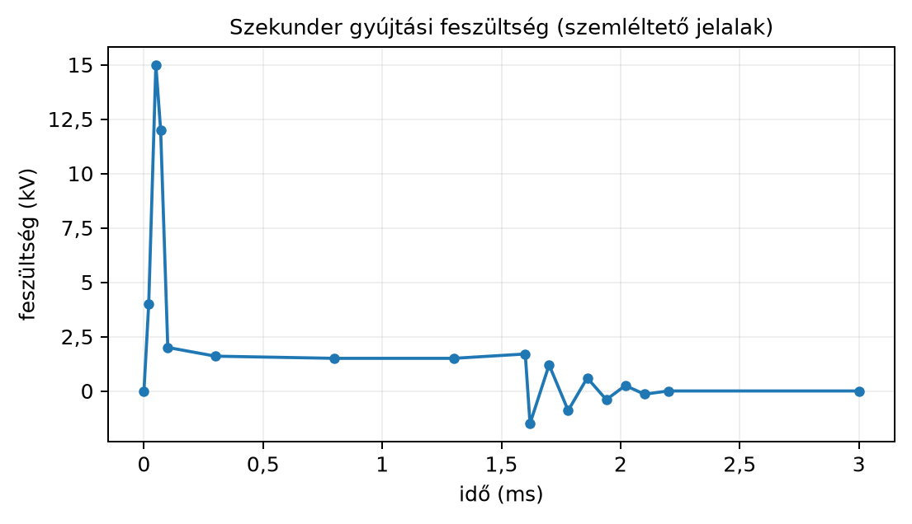

A műhelybe érkezik egy benzinmotoros gépkocsi: a motor hidegen nehezen indul, alapjáraton rángat, meleg motornál pedig teljesítményvesztés tapasztalható. A fedélzeti diagnosztika időnként gyújtáskimaradást jelöl (P0301, P0302 stb. – ellenőrizendő: a gyártói hibakódlista). A szerelő tudja, hogy az üzemanyag-ellátás, a kompresszió és a gyújtás közül valamelyik hibás. A gyújtórendszer gyors, kábelbontás nélküli vizsgálatára az oszcilloszkóp a legjobb eszköz: egyetlen szekunder gyújtási képből kiolvasható a gyújtófeszültség, a szikraidő, a lecsengés és a gyújtás pillanata. Ebben az alfejezetben megtanuljuk, hogyan csatlakoztassuk a mérőműszert, és hogyan értelmezzük a primer és szekunder jelalakokat a hagyományos és a modern gyújtórendszereken.
Képzeljük el a gyújtótekercs szekunder oldali feszültségét az idő függvényében. A gyújtótranzisztor ismételt nyitásakor a primer áram felépít, majd a tranzisztor lezárásakor a primer áram hirtelen megszakad. A tekercs mágneses fluxusa összeomlik, és a szekunder oldalon nagyfeszültség indukálódik. A feszültség először meredeken felfut, eléri a gyújtófeszültséget (szekunder csúcs), ekkor a gyújtógyertya elektródái között átüt a szikra. A szikra égése közben a feszültség leesik egy alacsonyabb, viszonylag állandó értékre, amit szikraégési feszültségnek nevezünk. A szikra kialvása után a megmaradt energia a primer és szekunder körben csillapodó, nagyfrekvenciás rezgésként (lecsengés) jelenik meg. A lenti ábra szemlélteti ezt az idealizált jelalakot:

Ábra leírása. A vízszintes tengelyen az idő, a függőlegesen a szekunder feszültség látható. A görbe először gyorsan emelkedik, majd elér egy csúcsot (itt kb. 15 kV), ezután visszaesik és kb. 1,5 ms-ig viszonylag lapos, kb. 1,5 kV-os szakaszon marad (szikraégés), végül csillapodó rezgéssel nullához csökken. A csúcsot gyújtófeszültségnek, a lapos szakasz hosszát szikraidőnek, a végső rezgést lecsengésnek nevezzük.
Definíció. Gyújtófeszültség. A szekunder feszültség csúcsa, amelynek el kell érnie a gyújtógyertya elektródái közötti átütéshez szükséges feszültséget. Értéke függ a gyertya hézagától, a hengerben uralkodó nyomástól, a hőmérséklettől, a keverék összetételétől és a gyertya állapotától. Jó benzinmotornál jellemzően 5–25 kV között van (ellenőrizendő: gyártói adat).
Definíció. Szikraidő. Az az időtartam, amely alatt a szikra a gyertya elektródái között ég. Egészséges rendszernél jellemzően 1–2 ms (ellenőrizendő). Ha a szikraidő túl rövid, a keverék nem gyullad meg megbízhatóan; ha túl hosszú, akkor a rendszer energiafelesleggel dolgozik, vagy a gyertya kopott.
Definíció. Lecsengés. A szikra megszűnése után a gyújtótekercsben visszamaradt energia csillapodó, nagyfrekvenciás (jellemzően 1–10 kHz) feszültségrezgése mind a primer, mind a szekunder oldalon. A lecsengés alakjából a tekercs, a gyújtókábel és a gyertya állapotára következtethetünk.
Definíció. Zárásszög. A primer áram folyásának ideje alatt eltelt forgattyústengely-szög. Hagyományos megszakítós rendszernél az érintkező zárva tartásának szöge, elektronikus rendszereknél a gyújtótranzisztor vezetési idejének megfelelő szög. A zárásszög határozza meg a primer áram felépülésének idejét (a primer energia feltöltését).
Definíció. Gyújtásszög. Az a forgattyústengely-szög FHP előtt, amelynél a gyújtás (a szikra) bekövetkezik. Ideális értékét a motor fordulatszáma és terhelése határozza meg, és a motorvezérlő vagy az elosztó mechanizmusa állítja be.
Összefüggés. A gyújtótekercs primer oldalán tárolt energia közelítőleg a primer áram maximumával és a primer induktivitással fejezhető ki:
ahol a szikraenergia (J), a primer tekercs induktivitása (H), a primer áram csúcsértéke (A). A szekunder feszültség csúcsa a menetszámok arányával közelíthető:
ahol a tekercs menetszámáttétele, a primer oldali induktív feszültségcsúcs. A gyakorlatban a szekunder feszültséget nemcsak a menetszámáttétel, hanem a szekunder kör csillapítása és a gyertya átütési feszültsége is befolyásolja.
Példa. Ha egy gyújtótekercs primer induktivitása és a primer áram megszakításkor , akkor a tárolt energia:
Ez a szikraenergia jellemző értéke (ellenőrizendő: gyártói adat).
Figyelem. A gyújtórendszer szekunder oldala nagyfeszültségű: jellemzően 5–25 kV csúcsértékű, a primer oldalon az induktív feszültségcsúcs 200–400 V is lehet (ellenőrizendő). Az oszcilloszkópos mérésnél ezért kizárólag megfelelő, CAT III (ellenőrizendő) feszültségtűrésű, szigetelt szondát és nagyfeszültségű mérőfejet, illetve induktív fogót használjunk. A mérővezetékeket soha nem szabad a szekunder oldalra közvetlenül kötni! A mérőműszer és a szondák gyártói előírásait szigorúan be kell tartani.
A gyújtás diagnosztikája során nem csak a hibakódot olvassuk ki, hanem a rendszer tényleges energiafolyamatát is vizsgáljuk. Az elektronikus gyújtás energiája a fedélzeti hálózatból a gyújtótekercs primer oldalán, mint mágneses energia tárolódik, majd a szekunder oldalon nagyfeszültségű szikraként hasznosul. A jelalakok ezt az energiaáramlást tükrözik.
Primer oldal mérése. A primer áram mérése áramfogóval (primeráram-fogóval) történik, amelyet a gyújtótekercs primer vezetékére vagy a gyújtómodul primer áramkörére csíptetünk. A primer feszültség méréséhez szigetelt feszültségszondát használunk a tekercs primer kapcsain. A primer jelalakon az áramfelfutás (tranzisztor bekapcsol), az áramcsúcs (megszakítás pillanata) és a kapcsolási tüske látható. A primer áram csúcsértékéből és a zárási időből a tekercs töltését ellenőrizhetjük.
Szekunder oldal mérése. A szekunder feszültségjelet
kapacitív csatolású szekunder szondával vesszük fel; az
induktív fogó a triggerjelet (az 1. henger gyújtását)
adja (ellenőrizendő: műszergyártói leírás). A fogót a
gyújtókábelre vagy a gyújtótekercs (COP – coil on plug) szekunder
részére csíptetjük, anélkül, hogy a nagyfeszültségű kört megbontanánk. A
szonda a kábel külső szigetelésén át kapacitívan csatolódik, és a
szekunder feszültséggel arányos jelet ad az oszcilloszkópra. A szekunder
feszültség mérése speciális nagyfeszültségű szondával vagy a primer
jelből visszaszámolva is lehetséges.
Mechanikus megszakítós és tranzisztoros rendszerek. A régi megszakítós rendszernél az oszcilloszkóp primer oldalát a gyújtótekercs 1-es kapcsára (a megszakító felé) és testre kötjük, a szekunder oldalt pedig a gyújtáselosztó középső kábelére fogóval. A primer jelalakon a megszakító nyitása után jelentkező kapcsolási tüske a kondenzátor és a tekercs primer rezgését mutatja. A zárásszöget a megszakító zárvatartási idejéből számíthatjuk. A tranzisztoros, primeráram-vezérelt rendszerben a megszakító helyett a gyújtótranzisztor kapcsol; a jelalak hasonló, de a felfutás meredekebb, és a tranzisztor telítési feszültségesése is megfigyelhető.
Elosztó nélküli és hengerenkénti tekercses rendszerek. A modern benzinmotoroknál gyakran nincs gyújtáselosztó. A “wasted spark” (páronkénti szikra) rendszereknél egy tekercs egyidejűleg két hengert szolgál ki, az egyiknél a sűrítési ütemben, a másiknál a kipufogási ütemben (pazarló szikra). A hengerenkénti tekercs (COP) rendszernél minden gyertyán saját tekercs ül. Mindkettőnél a szekunder jel méréséhez az induktív fogót a tekercs szekunder kimenetére vagy a gyújtókábelre helyezzük. Az oszcilloszkóp triggerét az 1. henger gyújtási jelére állítjuk, így a hengersorrend és a gyújtáskimaradás azonosítható.
Gyújtásidőzítés ellenőrzése. A gyújtásszöget kétféleképpen mérhetjük: 1) stroboszkóppal: a gyújtókábelt induktív fogóval megcsíptetve, a motor járása közben a főtengely ékszíjtárcsáján lévő jelölést megvilágítjuk, és a motorvezérlő által kért gyújtásszöget a gyári adattal összehasonlítjuk; 2) oszcilloszkóppal: a szekunder gyújtási kép felfutó élét a főtengelyjeladó jelével összehasonlítva mérjük a gyújtás pillanatát a FHP-hoz képest. A gyújtásszög eltérése a szoftveres beállítás hibájára, a kopott elosztóra vagy a motorvezérlő hibájára utalhat.
A szekunder gyújtási kép elemzése során a következő szakaszokat különböztetjük meg:
Felfutás és gyújtófeszültség. A felfutás meredeksége a szekunder kör ellenállásától és kapacitásától függ. A gyújtófeszültség értéke fontos diagnosztikai adat:
Szikraidő. A szikraidő a gyújtófeszültség csúcsától a lecsengés kezdetéig tart. Rövid szikraidő energiahiányra, rossz primer töltésre, hibás tekercsre vagy rendkívül nagy gyertyahézag miatt; hosszú szikraidő alacsony ellenállású szekunder körre vagy nagy tárolt energiára utalhat.
Lecsengés. A lecsengés frekvenciáját a szekunder kör induktivitása és kapacitása határozza meg. A lecsengés alakjából a szekunder kör állapota olvasható le: ha a lecsengés hiányzik vagy nagyon rövid, az zárlatra; ha túl sok rezgés van, az szakadásra utalhat. A lecsengés amplitúdója a szikrában el nem égett energiáról árulkodik.
Primer jelalak értelmezése. A primer áramjel a tranzisztor bekapcsolásakor exponenciálisan emelkedik (a primer kör időállandójával), majd a tranzisztor kikapcsolásakor hirtelen nullára esik. A primer feszültségen ekkor 200–400 V-os pozitív induktív tüske jelenik meg (ellenőrizendő), amelyet a kondenzátor vagy a gyújtómodul korlátoz. A zárási idő (áramfelfutás ideje) a zárásszögből és a fordulatszámból számítható. Az áramcsúcs értéke a tekercs primer ellenállásától, a tápfeszültségtől és a zárási időtől függ.
Cél: A gyújtórendszer állapotának ellenőrzése primer és szekunder jelalakok felvételével, gyújtáskimaradás okának azonosítása.
Jármű- és adatazonosítás: Rendszám, alvázszám, motorszám, gyártói típus, modellév, motorjel. A gyártói javítási adatokból: gyújtási rendszer típusa, zárásszög, gyújtásszög, tekercs primer ellenállás és induktivitás, gyertya hézag.
Szükséges szerszámok, célszerszámok, mérőeszközök, anyagok: - Digitális oszcilloszkóp (legalább 2 csatorna, 20 MHz sávszélesség, CAT III feszültségtűrés – ellenőrizendő) - Primeráram-fogó (pl. 0–20 A, DC) - Szekunder induktív fogó / nagyfeszültségű szonda - Feszültségszondák (10:1, szigetelt) - Stroboszkóp a gyújtásszög ellenőrzéséhez (ha szükséges) - Gyártói javítási adat, kapcsolási rajz - Védőkesztyű, védőszemüveg
Biztonsági korlát. A feladat tanműhelyi környezetre, oktató felügyeletére és a gyártói javítási utasítás betartására vonatkozik; a megadott értékek tanulási példák.
Figyelem. A gyújtórendszer szekunder oldala életveszélyes nagyfeszültséget állít elő. Mérés közben a motortérben forgó, forró és nagyfeszültségű alkatrészek találhatók. Az akkumulátor lekötése előtt a gyártó előírásait (adatmentés, tanítások) be kell tartani. Mérés csak szigetelt szerszámmal és megfelelő mérőműszerrel végezhető.
Munkavédelmi és környezetvédelmi lépések: - A járművet sík, jól szellőző helyen állítsuk le, rögzítőféket behúzva. - A gyújtást kapcsoljuk ki, a kulcsot tegyük el. - Az akkumulátor negatív pólusát lekötjük a gyártói előírás szerint (ha a méréshez nem szükséges a motor járatása, de oszcilloszkópos méréshez a motor jár, ezért az akkumulátor lekötésére csak akkor kerül sor, ha a gyártó előírja; jellemzően a mérés járó motornál történik, ezért fokozott figyelemmel kell eljárni). - A kipufogógázt zárt térben nem szabad belélegezni; elszívást használjunk.
Az (a) részábrán gyújtókábeles rendszeren a szekunder kapacitív fogó (CH2) a gyújtókábelen, a triggerfogó az 1. henger kábelén, a 10:1 primerszonda (CH1) a tekercs 1-es kapcsán, a testcsipesz a motortesten van. A (b) részábrán ceruzatekercses rendszernél a kiemelt tekercs és a gyertya közé COP-adapter kerül, rajta a szekunder érzékelő; a primeráram-fogó a tekercs vezetékén, az áramirány szerint áll. A szondákat csak álló motornál szereljük fel; járó motornál a nagyfeszültségű részt érinteni tilos. A HTML-változatban a rendszer kiválasztható, és az elemekre mutatva a szonda neve és a várható jelalak leírása jelenik meg.
Számozott munkalépések: 1. Kapcsoljuk ki a motort, várjuk meg, amíg kihűl. 2. Ellenőrizzük az oszcilloszkóp és a szondák állapotát, a szigetelést, a csatlakozókat. 3. Kapcsoljuk be az oszcilloszkópot, állítsuk be az időalapot (pl. 10 ms/osztás, a teljes motorciklushoz), a feszültségosztást és a trigger csatornát. 4. Szekunder méréshez: csíptessük az induktív fogót az 1. henger gyújtókábelére vagy a COP tekercs szekunder oldalára. Győződjünk meg a fogó iránybetartásáról (gyártói jelölés). 5. Primer méréshez (ha szükséges): csíptessük a primeráram-fogót a tekercs primer tápláló vezetékére, a feszültségszondát pedig a primer kapcsokra. 6. Indítsuk el a motort, és hagyjuk alapjáraton járni. 7. Állítsuk be a triggert az 1. henger gyújtási jelére (felfutó él, megfelelő szint), hogy stabil képet kapjunk. 8. Rögzítsük a jelalakot, és mentsük el a mérési jegyzőkönyvet. 9. Értelmezzük a görbét: gyújtófeszültség, szikraidő, lecsengés, zárási idő. 10. Ha hibát találunk, azonosítsuk a hengert, és a gyártói adatok alapján cseréljük a hibás alkatrészt (gyertya, kábel, tekercs, gyújtómodul). 11. A javítás után ismételjük meg a mérést, és győződjünk meg a hibátlan jelalakról. 12. Töröljük a hibakódokat, és végezzünk próbaút aszerint.
Ellenőrzési pontok: - Gyújtófeszültség minden hengernél közel azonos, és a gyártói tűrésen belül van (pl. 8–20 kV – ellenőrizendő). - Szikraidő minden hengernél legalább 1 ms, és közel azonos. - A lecsengés periodikus, csillapodó rezgés, nincs hirtelen szakadás vagy zárlat. - A primer áramcsúcs a gyártói érték körül van, és nem éri el a telítési tartományt.
Tipikus hibák: - A fogót nem a megfelelő kábelre csíptetik (pl. a primer kábelre a szekunder fogót). - A trigger szintje rosszul van beállítva, ezért a kép elúszik. - A mérés alatt a nagyfeszültségű részt kézzel megérintik; ez súlyos balesetet okoz. - Az oszcilloszkóp földelése nem megfelelő, vagy a szondák sérültek.
Dokumentálás: A mérési jegyzőkönyvbe rögzítsük a jármű adatait, a mérési beállításokat, a felvett jelalakot (kép vagy adat), a leolvasott értékeket és a diagnosztikai következtetést.
Egy 1,6 literes, hengerenkénti tekercses (COP) benzinmotorral szerelt autó motorhiba-jelzővel érkezik. Az ügyfél panasza szerint a motor “rángat” gyorsításkor, alapjáraton egyenetlen. A diagnosztikai műszer a 3. hengerben gyújtáskimaradást jelöl (P0303 – ellenőrizendő). A szerelő oszcilloszkóppal megvizsgálja a 3. henger szekunder gyújtási jelét. A jelalakon a gyújtófeszültség 22 kV (a többi hengernél 12 kV), a szikraidő pedig csak 0,4 ms. A lecsengés rövidebb, és a csúcs után azonnal visszaesik. Ez a gyertyahézag megnövekedésére, a gyújtókábel/tekercs szekunder ellenállásának növekedésére vagy a gyertya belső szakadására utal. A gyertyát kicserélik, a jel újra 12 kV csúcsot és 1,6 ms szikraidőt mutat. A hibakód törlése után a motor egyenletesen jár. A tanulság: a gyújtófeszültség és a szikraidő együtt jó indikátora a gyertya és a szekunder kör állapotának.
Hiba 1: A gyújtófeszültség abszolút értékét nem a hengerek között hasonlítja össze a szerelő. Minden motornál a kompresszió, a keverék és a gyertya állapota eltér, ezért az egyes hengerek között 20–30 %-os eltérés még normális lehet. A diagnózis alapja a hengerek közötti összehasonlítás: ha egy henger kiugrik, az ott hibás.
Hiba 2: Az oszcilloszkóp triggerét az 1. henger primer jelére állítja, de a szekunder képnél figyelmen kívül hagyja a pazarló szikrát. A “wasted spark” rendszernél a szekunder jelben két szikra látható: az egyik a sűrítési, a másik a kipufogási ütemben. A kipufogási szikra gyújtófeszültsége kisebb. Ha a szerelő a nagyobb vagy a kisebb csúcsot tévesen azonosítja, rossz következtetést vonhat le.
Hiba 3: Az induktív fogót a gyújtókábel külső szigetelésén okozott sérülésnél használja, vagy nem a megfelelő irányba teszi fel. A fogó kalibrálása irányfüggő, és a sérült szigetelés balesetet is okozhat. A mérés előtt ellenőrizni kell a fogó és a kábel állapotát.
Hiba 4: A gyújtáskimaradást kizárólag a szekunder kép alapján ítéli meg, anélkül, hogy a primer oldalt is megvizsgálná. Ha a primer áram nem tud felépülni (pl. rossz tranzisztor, túl nagy ellenállás a primer körben), a szekunder oldalon is hibás lesz a jel. A primer áramjel vizsgálata segít elkülöníteni a primer és szekunder hibát.
1. Igaz vagy hamis? A szekunder gyújtási jel csúcsa mindig pontosan 20 kV, függetlenül a motor fordulatszámától. Indokolja a választ.
2. Mi a különbség a szikraidő és a zárásszög között?
3. Egy gyújtótekercs primer induktivitása 6 mH, a primer áram csúcsa 7 A. Mennyi a szikraenergia?
4. Milyen hiba utalhat arra, ha a szekunder gyújtási képen a gyújtófeszültség 28 kV, a szikraidő pedig 0,3 ms?
5. Miért nem köthetjük közvetlenül az oszcilloszkóp szondáját a gyújtótekercs szekunder kapcsára?
1. feladat (A). Definiálja a gyújtófeszültséget, a szikraidőt és a lecsengést a szekunder gyújtási képen.
2. feladat (A). Számítsa ki egy gyújtótekercs szikraenergiáját, ha a primer induktivitás és a primer áram megszakításkor .
3. feladat (B). Egy motor alapjárati fordulatszáma 800 1/min. A gyújtótranzisztor zárási idejét az oszcilloszkópon 4,2 ms-nak mérik. Mekkora a zárásszög főtengely-fokban? Régi, elosztós rendszernél mekkora ez elosztószögben?
4. feladat (B). Rajzolja le (szabadkézzel) egy egészséges henger szekunder gyújtási jelalakját, és jelölje rajta: gyújtófeszültség, szikraidő, lecsengés. Milyen értékeket vár a jellemzőkre?
5. feladat (C). Hasonlítsa össze a mechanikus megszakítós gyújtás és a hengerenkénti tekercses (COP) rendszer oszcilloszkópos mérési módszerét: hol helyezzük el a szekunder fogót, milyen primer jelet mérünk, és mi a fő különbség a jelalakban?
6. feladat (D). Egy 4 hengeres, “wasted spark” gyújtású motornál az 1. és 4. henger közös tekercsét vizsgálja. A szekunder jelben, mindkét hengert a saját sűrítési ütemében mérve, az 1. henger gyújtófeszültsége 10 kV, a 4. hengeré 23 kV. A motor 4. hengerénél gyújtáskimaradás kódot jelöl. Mi a valószínű hiba, és milyen további méréseket végezzen?
Hamis. A gyújtófeszültség a hengerben uralkodó nyomástól, hőmérséklettől, keverék-összetételtől, gyertyahézagtól és a szekunder kör ellenállásától függ, ezért a fordulatszám és a terhelés változásával is változik (jellemzően 5–25 kV).
Szikraidő az az időtartam, amíg a szikra ég a gyertya elektródái között; zárásszög a primer áram folyásának ideje alatti forgattyústengely-szög, amely a gyújtótekercs energiatöltését szabja meg.
Túlságosan nagy gyertyahézag, gyújtókábel szakadás vagy nagy ellenállás, gyertya belső szakadás, rossz keverék vagy a szekunder kör meghibásodása. A rövid szikraidő energiahiányra vagy a szekunder kör nagy ellenállására utal.
Mert a szekunder oldali feszültség 5–25 kV, ami a közönséges szonda és az oszcilloszkóp bemenetét tönkreteszi és balesetveszélyes. A szekunder jelet csak kapacitív csatolású szekunder szondával vagy nagyfeszültségű osztós szondával mérhetjük.
1. feladat (A). A gyújtófeszültség a szekunder feszültség legnagyobb értéke a szikra átütésének pillanatában. A szikraidő a gyújtófeszültség csúcsától a lecsengés kezdetéig tartó időszak, amíg a szikra ég. A lecsengés a szikra kialvása után a gyújtótekercsben tárolt maradék energia csillapodó, nagyfrekvenciás feszültségrezgése mind a primer, mind a szekunder körben.
2. feladat (A). . ; .
3. feladat (B). Fordulatszám . Egy főtengelyfordulat ideje . A zárási idő . A zárásszög (főtengely-szögben) . Hagyományos megszakítós rendszernél az elosztó fél fordulatszámmal forog, ezért az elosztó szögére számolva ennek fele, azaz kb. , de a modern terminológia a főtengely-szöget használja (ellenőrizendő: gyártói definíció).
4. feladat (B). A rajz egy 0-ból gyorsan felfutó, kb. 15 kV csúcsú görbe, majd a feszültség visszaesik kb. 2 kV-ra, ahol kb. 1–2 ms-ig lapos marad (szikraidő), végül csillapodó, néhány kHz frekvenciájú rezgéssel nullára csökken. A jellemző értékek: gyújtófeszültség 5–25 kV, szikraidő 1–2 ms, lecsengés amplitúdója a csúcs néhány százaléka.
5. feladat (C). A mechanikus megszakítós rendszernél a szekunder fogót a gyújtáselosztó középső (nagyfeszültségű) kábelére csíptetjük; a primer jelet a gyújtótekercs 1-es kapcsa (megszakító felőli oldal) és test között mérjük. A jelalakon a megszakító nyitásakor kapcsolási tüske és a primer rezgés látható. A COP rendszernél nincs elosztó; a szekunder fogót közvetlenül a gyújtótekercs szekunder kimenetére vagy a gyertyakábelre (ha van) helyezzük. A primer jelet a tekercs primer csatlakozóján vagy a gyújtómodulon mérjük. A fő különbség, hogy a COP rendszerben hengerenként külön jel van, a mechanikus rendszerben az elosztó miatt a szekunder jelek sorozatban jelennek meg, és a pazarló szikra hiányzik.
6. feladat (D). A “wasted spark” rendszerben az 1. és 4. henger azonos gyújtótekerccsel dolgozik, de a két hengerben eltérő nyomás- és hőmérsékletviszonyok vannak. A 4. henger magas gyújtófeszültsége és a gyújtáskimaradás a 4. henger szekunder körének megnövekedett ellenállására utal: lehet nagy gyertyahézag, gyertyakábel hiba, vagy a gyertya sérülése. Az alacsony kompresszió inkább csökkentené a gyújtófeszültséget, ezért a kompressziómérés kizáró vizsgálat. A további mérések: kompressziómérés, a gyertya és a kábel ellenállásának mérése, a gyertya szemrevételezése. A hibás alkatrész cseréje után ismételten fel kell venni a szekunder képet.
A gyújtásdiagnosztika oszcilloszkóppal a gyújtórendszer energiafolyamatát teszi láthatóvá. A szekunder gyújtási képen a gyújtófeszültség a szikra átütéséhez szükséges csúcsfeszültség, a szikraidő a szikra égésének időtartama, a lecsengés a visszamaradt energia csillapodó rezgése. A primer oldal mérése a primer áramot és a kapcsolási tüskét mutatja; a zárásszög a primer energiatöltés idejét jellemzi. A mérés során a szekunder jelet induktív fogóval, a primer jelet áramfogóval vagy feszültségszondával vesszük fel. A mechanikus megszakítós, a tranzisztoros, az elosztó nélküli és a hengerenkénti tekercses rendszerek mérési módszere eltérő, de a jelalak értelmezése azonos. A gyújtófeszültség és a szikraidő összehasonlítása a hengerek között segít a gyújtógyertya, a kábel, a tekercs és a primer kör hibáinak elkülönítésében. A nagyfeszültség miatt a mérés csak szigetelt, megfelelő kategóriájú műszerrel végezhető. Továbbvitt eredmény. A gyújtási kép értelmezésének itt elsajátított módszere (gyújtófeszültség, szikraidő, lecsengés, hengerek közötti összehasonlítás) a Vizsgafelkészülés és a Gyakorlati vizsgafelkészülés alfejezetekben a komplex hibakeresési feladatokban hasznosul.